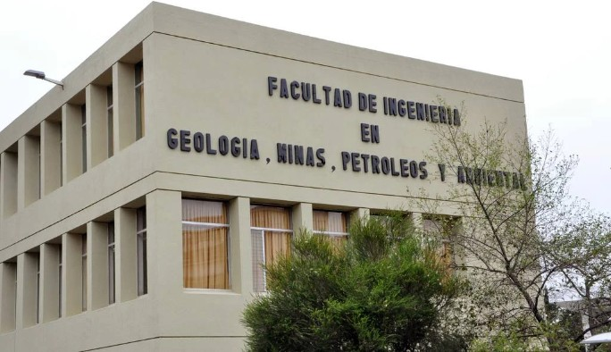

Este proyecto y la información presentada tienen exclusivamente fines académicos y educativos. El contenido aquí expuesto se ha desarrollado con el propósito de apoyar procesos de aprendizaje, análisis y reflexión, sin perseguir objetivos comerciales ni constituir asesoría profesional. Cualquier dato, ejemplo o referencia utilizada sirve únicamente como material de estudio y no debe interpretarse como una recomendación formal para la toma de decisiones en contextos reales. El uso de esta presentación debe realizarse en el marco de actividades formativas, respetando siempre los derechos de autor y las normas éticas y académicas vigentes.
Explora 24 años de evolución ambiental en Estados Unidos a través de más de 665,000 registros sobre contaminantes críticos como NO₂, SO₂, CO y O₃, optimizados para la investigación y el análisis estadístico actualizado.
Este proyecto nace del interés por aplicar la estadística a problemas ambientales reales, usando datos abiertos de EE.UU para practicar el análisis, la inferencia y el modelado.

Estudiantes pertenecientes al tercer semestre de la carrera de Ingeniería Ambiental en la Facultad de Ingeniería en Geología, Minas, Petróleos y Ambiental (FIGEMPA) de la Universidad Central del Ecuador. Este trabajo de investigación se desarrolla dentro del marco académico de la asignatura de Estadística y Probabilidades, teniendo como propósito principal la aplicación de metodologías cuantitativas y el procesamiento riguroso de grandes volúmenes de datos orientados a la solución de problemas ambientales.